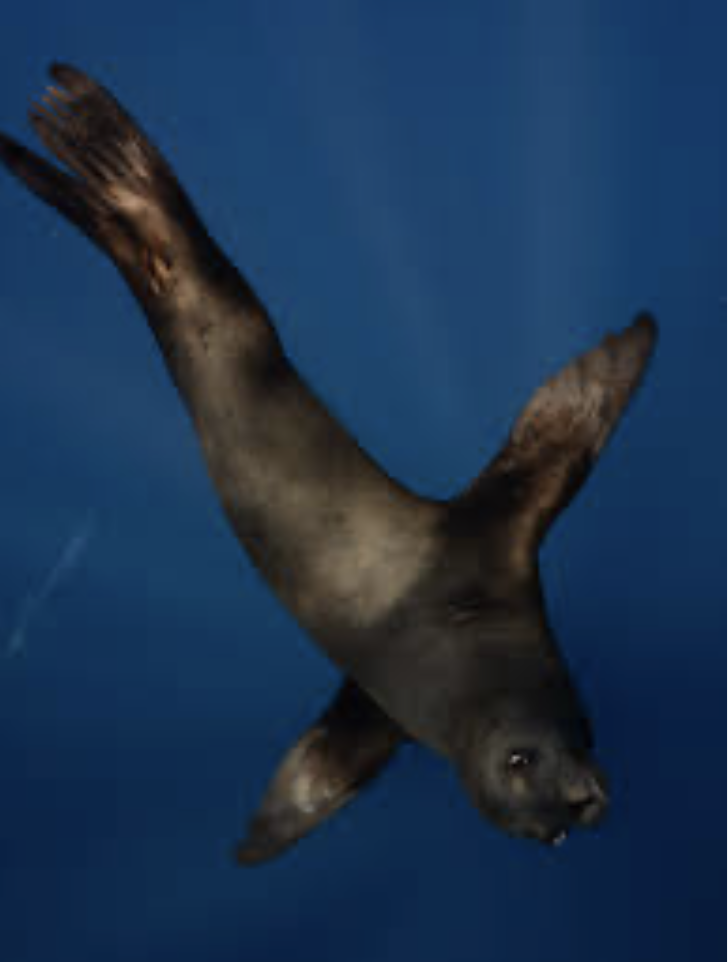
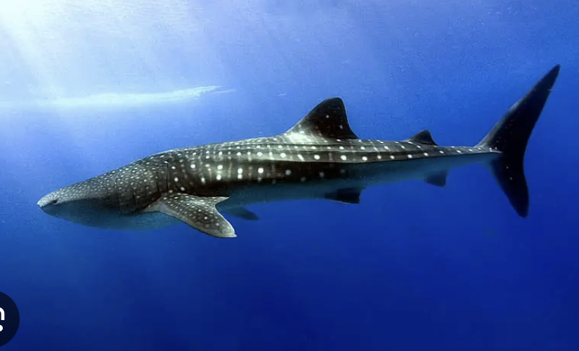
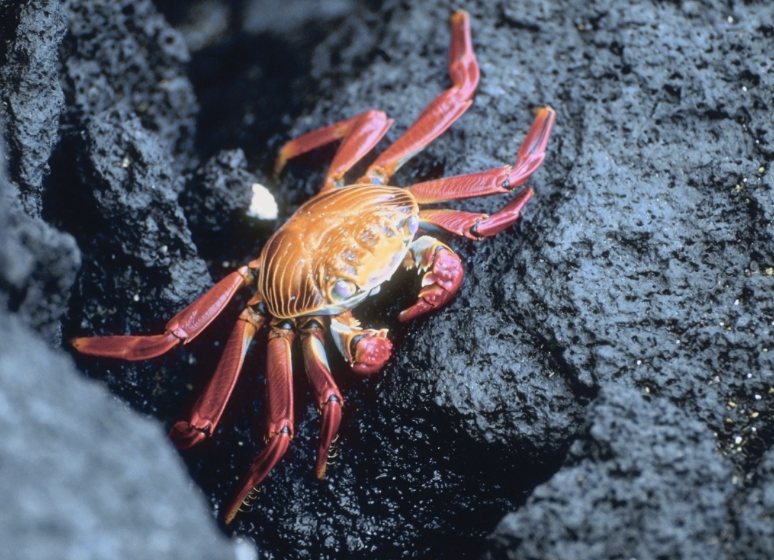
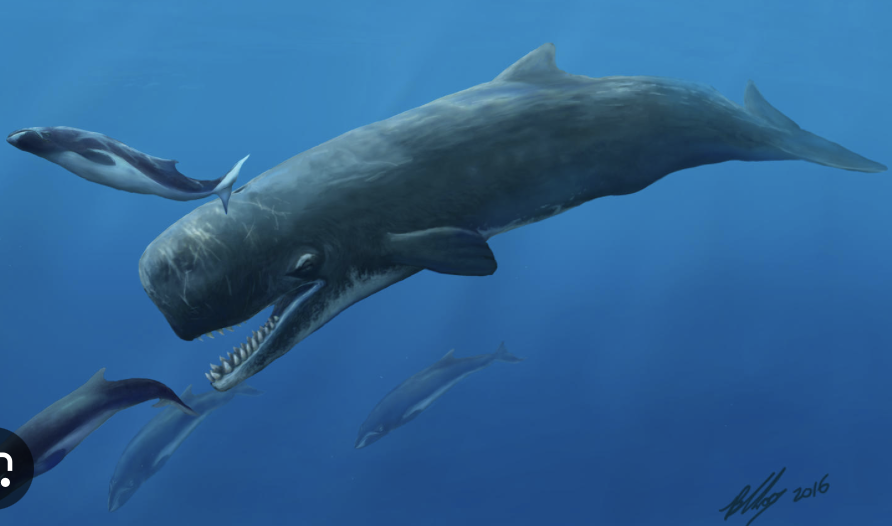
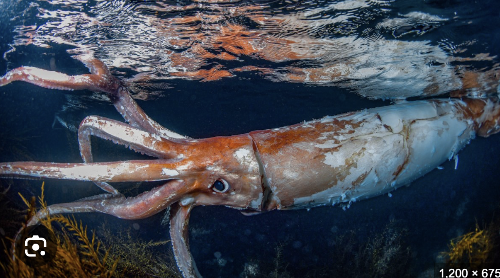
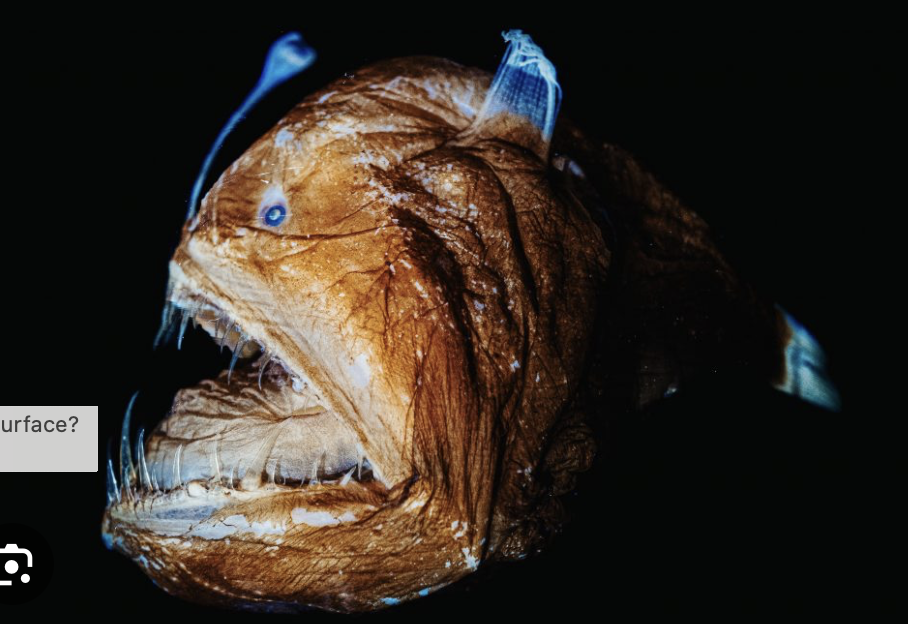
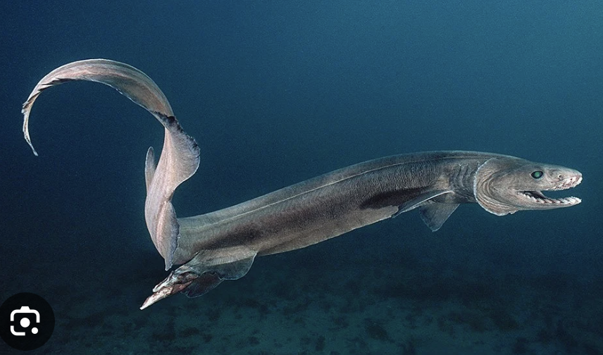
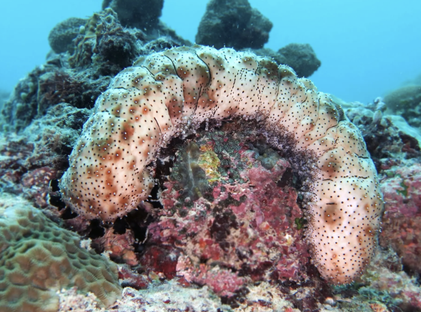

A descent through the ocean's five layers of light.



Only a faint blue glow survives here. Photosynthesis stops, and animals begin to make their own light to hunt, hide, and find one another.


No sunlight reaches this far. The water is icy and the pressure crushing. Life here glows with bioluminescence to lure prey and startle predators.



You've reached the end of the ocean, but the end only means the beginning.
I know that this is the beginning of exploring the academic world.